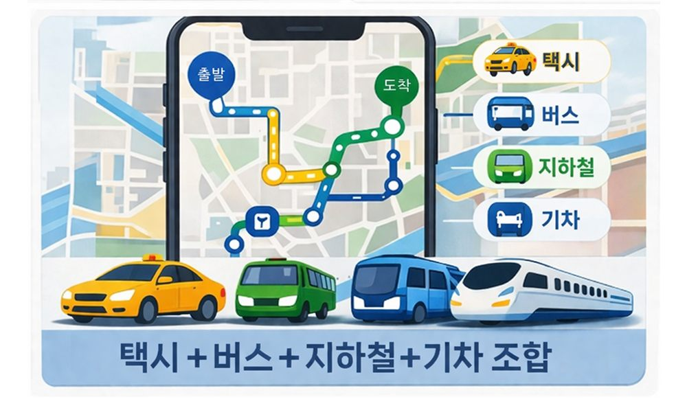
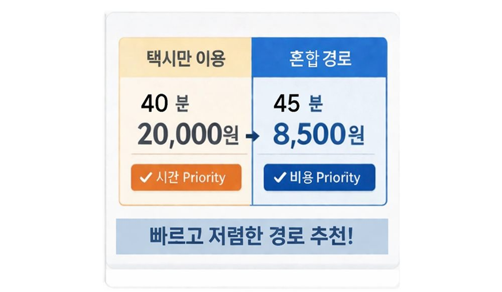
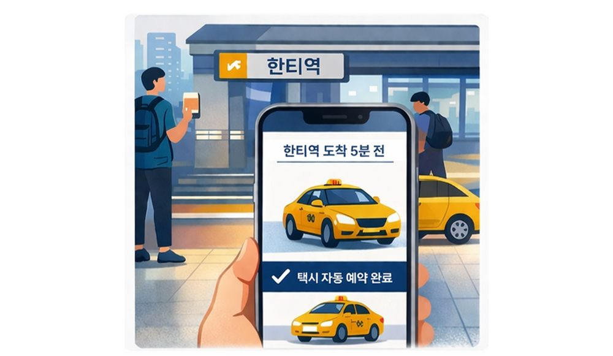
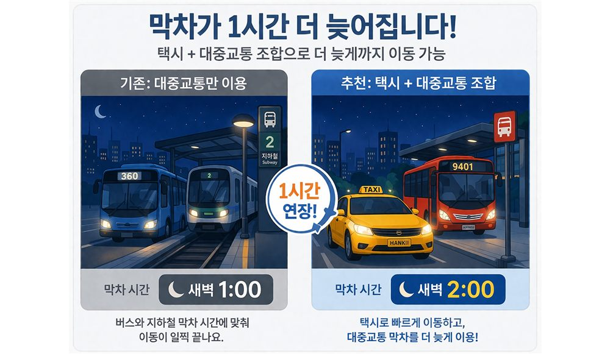

혹시 이런 경험 있으신가요?
약속에 늦었는데
대중교통 타기에는 너무 늦고
택시는 너무 비쌌던 적 있나요?
술자리에서 조금 더 있고 싶은데
막차 때문에 혼자 먼저 나가야 했던 적 있나요?
택시를 불러야 하는데
앱 켜고, 위치 찍고, 기다리는 게
귀찮았던 적 있나요?
이 모든 고민,
이제 한 번에 해결됩니다. ✓
BTX의 솔루션
고민하지 마세요. 앱이 알아서 찾아드립니다.
예시 경로 — 자택 → 인천공항
자택
공항철도
인천공항
51분
총 소요시간
₩12,400
예상 비용
↓ 63%
택시 대비 절약
핵심 기능

🗺️여기에 혼합 경로 추천 화면 이미지를 넣어주세요
출발지와 목적지를 입력하면 택시와 대중교통을 최적으로 조합한 경로를 자동으로 제시합니다.
고민 없이 최적 경로 제시.

⚖️여기에 시간/비용 선택 화면 이미지를 넣어주세요
빠른 경로, 저렴한 경로, 균형 잡힌 경로 중에서 지금 내 상황에 맞는 걸 고르면 끝.
시간이 촉박하면 속도 우선, 여유 있으면 비용 우선으로.

🚖여기에 택시 자동 예약 화면 이미지를 넣어주세요
환승 지점에 도착하는 타이밍에 맞춰 택시가 자동으로 호출됩니다.
기다림 없이 내리자마자 바로 탑승.

🌙여기에 막차 시간 연장 화면 이미지를 넣어주세요
택시로 다음 역까지 이동하면 막차를 더 늦게 탈 수 있습니다.
자리에서 일어나야 하는 시간이 1시간 늘어납니다.
기존 막차
새벽 1시
BTX 이용 시
새벽 2시 🌙
출발지와 목적지를 입력하면
최적 조합 경로를 바로 확인할 수 있습니다.
지금 바로 경험해보세요 · 별도 설치 불필요